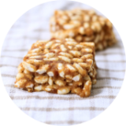

Recetas
BOMBONES DE NUECES PECAN
Tiempo de preparación: 10 minutos
Porciones: 10
Fuente: Oh my bowl
Ingredientes
- 100 gr. dátiles
- 50 gr. nueces pecán
- 20 gr. harina de almendras
Preparación
- Colocar los dátiles en remojo por un par de horas. Escurrir bien y sacarle el carozo.
- Colocar en una procesadora los dátiles y la harina de almendras. Procesar bien hasta que quede una pasta.
- Agregar las nueces y procesar nuevamente, hasta que las nueces queden picaditas.
- Colocar en un molde rectangular forrado con papel manteca y llevar a la heladera por dos horas.
- Cortar en cubitos y colocar en moldes para bombon